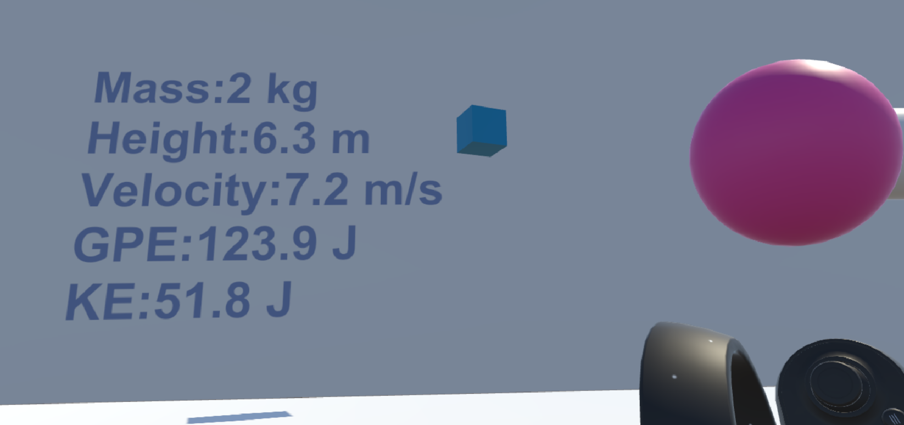

Mission
To improve student learning through interactive, visual physics education.
Updates
Blog - 11/8/2018
This week we narrowed down our vision to developing a 3D Electric Field Visualizer and an app that will use the visualizer and allow users to interact with kinematic charges in a playground environment. We have built a new scene and modified code provided by Jared Canright (Physics Not Included) to create the base scene and playground, created the 3D Electric Field, and scripted animations showing the 3D electric vector field responding to charges in real-time.
Current goals for next week
- Handle User Interaction through controller events in scene
- Be able to add and move charges, reset scene, delete charges
- Improve vector visuals further, include research on getting alpha/opacity to work for our vectors
- Record an animated charge going through electric field for class presentation
- Research a simple curated demo a user might experience for after playground is further along
Work Completed this week
Ryan - I had meetings with Jared and had some back and forth with Aditya on our final concept. After arriving at the Electric Field Visualizer concept, I updated the PRD with a more concrete outlook on the MVP and potential stretch goals. On the project side, I worked on a new unity scene that will be the basis for our playground. The work on the scene this week included adding 3D grid version of Jared's plane probe that works for 3 dimensions, adding the 3D vector field, a game floor with player teleport , and coloring and sizing vectors by magnitude returned from Jared's EM engine. This coming week I will be working on videos for Tuesday's presentation then will be working on controller input to add charges and change scene options.
Jeff -
Candice -
Two views from our scene with 3D Electric Vector Field
Blog - 11/1/2018
This week out team met with Jared Canright and Suzanne White Bramhia. We have decided to work towards a statics demo for the honors Electromagnetism honors 122 class in winter. Jared has a working EM demo with magentic field vectors visualized on negative and positive charges which the user can place and move.
Our team will be assisting Jared build out features for his project: Physics Not Included, and will be working the project into a Statics demo for next quarter. This week we will be beginning to work with Physics Not Included. Since this was built for Oculus and Vive controllers, we will first need to figure out building and controller event handling across these two platforms. We worked Thursday with Jared to build a couple of working scense using WMR and our controllers.
Current goals from Jared:
- Improved UI/UX with RayCasting
- Networking Capability, multidevices in a single scene
- Unit Testing to confirm physics calculations
- Allow Session Recording
- Build in TA Interaction
Work Completed this week
Ryan - I worked on learning controller input in Unity through Unity.Input API, and am currently using that in the Gravitational Potential Energy Demo to setup, reset, and play the demo. I was in attendance for the meeting with Jared and Suzanne to discuss potential useful demos and got to demo Jared's current work on the Oculus. Also worked on the blog and updated the PRD to reflect current progress and outlook. This week I will be investigating networking with VR VR Applications, playing with RayCasting, and working with building Jared's project and accepting input with the WMR and Motion Controllers.
Jeff - I worked on familiarizing with different Unity APIs. I attended to the meeting with Jared and Suzanne to discuss the vision for Jared’s work and potential work we can do. I look into Jared’s current code and understand the code he wrote and EM package he used. I will look for RayCasting solution for controllers and also better field representations.
Candice - I worked on familiaring myself with Unity scripting. I looked more into controller input I spent time looking for solutions on the location mismatch of the controllers. I was in attendace for the meeting with Jared and Suzanne to discuss potential useful demos. I started to look into the existing code base from Jared's github. I participated in the group discussion on where the project could be readed to. This week I will continue looking into Jared's code base and look into how to create our own scenue utilizing some of the tools Jared has implemented.
Unfortunately, Phoenix is out this week with a serious health matter
Setting and Releasing Block - Gravitational Potential Energy Demo
Physics Not Included - Jared Canright
Blog - 10/26/2018
This week we created a basic demo revolving around gravitational potential energy and conversion to kinetic energy. The user is placed in a room with a switch, hovering a hand on the switch activates a falling block demo paired with a real-time text display updating vertical velocity, gravitational potential energy, and vertical kinetic energy. The user can reset the demo and rewatch. Although this basic demo is mechanics related and we are going to be moving forward with working with the physics department on a EM demo, we learned valuable skills in Unity, C#, and using the SteamVR api's.
These skills include event handling from a SteamVR Interactable object, working with Unity's built in Physics engine and Rigidbody classes, working with and updating UiText objects in Unity, and basic C# scripting to manipulate GameObjects and handle Unity Events.
Aditya facilitated a meeting with the Physics Education Group at the University of Washington this week, and we have shifted our focus from creating high school education materials to creating materials to integrate into their electrodynamics tutorial program. We are excited to be collaborating with a group who has such deep domain expertise.
Displaying difficult to visualize properties through trailing and dynamic graphics

Project Requirements Document
The documentation for our project can be viewed here.
Team
Candice Miao
Candice is a senior majoring in Computer Science and minoring in Applied Mathematics. She is passionate about product management and software engineering.
Jeff Xu
Jeff is studying Computer Science at the University of Washington in Seattle, WA
Phoenix Meadowlark
Phoenix is an undergraduate studying Computer Science and Philosophy, and a Neuroethics Researcher with the Center for Neurotechnology at the University of Washington.
Ryan Matthew Smith
Ryan is a software engineer, photographer, and entreprenuer. He is currently a Software Design Engineer at PicoBrew and pursuing a degree in Computer Engineering from University of Washington. He is also known as the photographer of Modernist Cuisine and co-founder of ChefSteps.